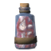
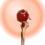
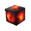
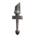
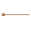
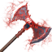
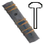
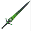
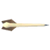

Armas, ferramentas e munições
Armas, ferramentas e munições em Valheim – 200 itens com bioma, origem, ferramenta necessária, receita e utilização.
Nenhum item encontrado.
 Adaga de fogogelo
Adaga de fogogelo
Um corte desta lâmina arde como gelo e então queima como o fogo.
Como obter
- Fabricar: Forja preta (nível 4) a partir de 1 ×
 Adaga Nórdica, 20 ×
Adaga Nórdica, 20 ×  Ourossangue, 1 ×
Ourossangue, 1 ×  Essência de fogogelo · por melhoria: 10 × Ourossangue, 1 × Essência de fogogelo
Essência de fogogelo · por melhoria: 10 × Ourossangue, 1 × Essência de fogogelo
 Adaga de trovossangue
Adaga de trovossangue
A lâmina já está ensanguentada, mas brilha querendo mais.
Como obter
- Fabricar: Forja preta (nível 4) a partir de 1 × Adaga Nórdica, 20 × Ourossangue, 1 ×
 Essência de trovossangue · por melhoria: 10 × Ourossangue, 1 × Essência de trovossangue
Essência de trovossangue · por melhoria: 10 × Ourossangue, 1 × Essência de trovossangue
Adaga Nórdica
Um brilho dourado será a última coisa que seus inimigos verão na vida.
Como obter
- Fabricar: Forja preta (nível 4) a partir de 20 × Ourossangue, 1 ×
 Molde: Adaga Nórdica, 10 ×
Molde: Adaga Nórdica, 10 ×  Madeira Nórdica · por melhoria: 10 × Ourossangue, 5 × Madeira Nórdica
Madeira Nórdica · por melhoria: 10 × Ourossangue, 5 × Madeira Nórdica - Cozinhar: Fundição gélida a partir de
 Peça fundida: Adaga Nórdica
Peça fundida: Adaga Nórdica
Utilização
- Ingrediente para: Adaga de fogogelo, Adaga de trovossangue
 Archote
Archote
Traz luz e calor, afasta as trevas.
Como obter
- Fabricar: sem bancada a partir de 1 ×
 Madeira, 1 ×
Madeira, 1 ×  Resina
Resina - Baús: Navio de pedras (túmulo) · 53 % de probabilidade, Aldeia do Norte · 53 % de probabilidade, Cabana (Norte) · 52 % de probabilidade, Acampamento de lenhadores · 52 % de probabilidade, Ruína de combate · 50 % de probabilidade, Casa de madeira abandonada · 28–36 % de probabilidade, Quinta abandonada · 36 % de probabilidade, Aldeia draugr · 36 % de probabilidade
 Arco de boa madeira
Arco de boa madeira
Um arco simples de madeira forte e flexível.
Como obter
- Fabricar: Bancada de trabalho a partir de 10 ×
 Boa madeira, 10 ×
Boa madeira, 10 ×  Núcleo de madeira, 2 ×
Núcleo de madeira, 2 ×  Pele de veado · por melhoria: 5 × Boa madeira, 5 × Núcleo de madeira, 2 × Pele de veado
Pele de veado · por melhoria: 5 × Boa madeira, 5 × Núcleo de madeira, 2 × Pele de veado
 Arco de caçador
Arco de caçador
Finamente trabalhado, a alegria de um caçador.
Como obter
- Fabricar: Forja a partir de 10 × Boa madeira, 20 ×
 Ferro, 10 ×
Ferro, 10 ×  Penas, 2 × Pele de veado · por melhoria: 5 × Boa madeira, 10 × Ferro, 5 × Penas, 2 × Pele de veado
Penas, 2 × Pele de veado · por melhoria: 5 × Boa madeira, 10 × Ferro, 5 × Penas, 2 × Pele de veado
 Arco de fogogelo
Arco de fogogelo
Mantenha a calma ao preparar o arco e então solte sua fúria com as flechas.
Como obter
- Fabricar: Forja preta (nível 4) a partir de 1 ×
 Arco Nórdico, 20 × Ourossangue, 1 × Essência de fogogelo · por melhoria: 10 × Ourossangue, 1 × Essência de fogogelo
Arco Nórdico, 20 × Ourossangue, 1 × Essência de fogogelo · por melhoria: 10 × Ourossangue, 1 × Essência de fogogelo
 Arco de trovossangue
Arco de trovossangue
A eletricidade dança pela corda, aguardando ser libertada.
Como obter
- Fabricar: Forja preta (nível 4) a partir de 1 × Arco Nórdico, 20 × Ourossangue, 1 × Essência de trovossangue · por melhoria: 10 × Ourossangue, 1 × Essência de trovossangue
Arco Nórdico
Este arco encontra o alvo com precisão áurea.
Como obter
- Fabricar: Forja preta (nível 4) a partir de 20 × Ourossangue, 1 ×
 Molde: Arco Nórdico, 10 × Madeira Nórdica · por melhoria: 10 × Ourossangue, 5 × Madeira Nórdica
Molde: Arco Nórdico, 10 × Madeira Nórdica · por melhoria: 10 × Ourossangue, 5 × Madeira Nórdica - Cozinhar: Fundição gélida a partir de
 Peça fundida: Arco Nórdico
Peça fundida: Arco Nórdico
Utilização
- Ingrediente para: Arco de fogogelo, Arco de trovossangue
 Arco tosco
Arco tosco
Um arco tosco, mas funcional.
Como obter
- Fabricar: Bancada de trabalho a partir de 10 × Madeira, 8 ×
 Farrapos de couro · por melhoria: 5 × Madeira, 4 × Farrapos de couro, 1 × Pele de veado
Farrapos de couro · por melhoria: 5 × Madeira, 4 × Farrapos de couro, 1 × Pele de veado
 Arpão abissal
Arpão abissal
A fúria do oceano.
Como obter
- Fabricar: Bancada de trabalho (nível 2) a partir de 8 × Boa madeira, 30 ×
 Quitina, 3 × Farrapos de couro
Quitina, 3 × Farrapos de couro
 Atgeir de bronze
Atgeir de bronze
A ferramenta de um verdadeiro guerreiro.
Como obter
- Fabricar: Forja a partir de 10 × Madeira, 8 ×
 Bronze, 2 × Farrapos de couro · por melhoria: 4 × Bronze
Bronze, 2 × Farrapos de couro · por melhoria: 4 × Bronze
 Atgeir de ferro
Atgeir de ferro
Sanguinário, cruel e letal.
Como obter
- Fabricar: Forja (nível 2) a partir de 10 × Madeira, 30 × Ferro, 2 × Farrapos de couro · por melhoria: 15 × Ferro, 1 × Farrapos de couro
 Atgeir de fogogelo
Atgeir de fogogelo
Deixe que as chamas comecem a devorar, e o gelo se apossará do que sobrar.
Como obter
- Fabricar: Forja preta (nível 4) a partir de 1 ×
 Atgeir Nórdica, 20 × Ourossangue, 1 × Essência de fogogelo · por melhoria: 10 × Ourossangue, 1 × Essência de fogogelo
Atgeir Nórdica, 20 × Ourossangue, 1 × Essência de fogogelo · por melhoria: 10 × Ourossangue, 1 × Essência de fogogelo
 Atgeir de madeira
Atgeir de madeira
Pode não ferir muito, mas tem alcance!
Como obter
- Baús: Cabana fuling · 17 % de probabilidade, Torre de pedra (Montanhas) · 17 % de probabilidade, Ruína · 17 % de probabilidade, Missão de Hildir: Torre selada · 17 % de probabilidade, Aldeia fuling · 17 % de probabilidade
 Atgeir de metal negro
Atgeir de metal negro
Um machado cruel de metal negro praticamente inquebrável.
Como obter
- Fabricar: Forja (nível 4) a partir de 10 × Boa madeira, 30 ×
 Metal preto, 5 ×
Metal preto, 5 ×  Fio de linho · por melhoria: 15 × Metal preto, 5 × Fio de linho
Fio de linho · por melhoria: 15 × Metal preto, 5 × Fio de linho
 Atgeir de trovossangue
Atgeir de trovossangue
Os céus reverberam elogios enquanto você faz seus inimigos sangrarem.
Como obter
- Fabricar: Forja preta (nível 4) a partir de 1 × Atgeir Nórdica, 20 × Ourossangue, 1 × Essência de trovossangue · por melhoria: 10 × Ourossangue, 1 × Essência de trovossangue
Atgeir Nórdica
A lâmina desta arma é tão mortal quanto é brilhante.
Como obter
- Fabricar: Forja preta (nível 4) a partir de 20 × Ourossangue, 1 ×
 Molde: Atgeir Nórdica, 10 × Madeira Nórdica · por melhoria: 10 × Ourossangue, 5 × Madeira Nórdica
Molde: Atgeir Nórdica, 10 × Madeira Nórdica · por melhoria: 10 × Ourossangue, 5 × Madeira Nórdica - Cozinhar: Fundição gélida a partir de
 Peça fundida: Atgeir Nórdica
Peça fundida: Atgeir Nórdica
Utilização
- Ingrediente para: Atgeir de fogogelo, Atgeir de trovossangue
 Bandeja
Bandeja
Prepare a mesa com as comidas e bebidas de sua predileção e impressione os convidados com um banquete delicioso. Assim que o banquete for consumido, ele não devolverá nenhum recurso se desmontado.
Como obter
- Comprar: A Bruxa do Pântano · 140 moedas
 Besta de fogogelo
Besta de fogogelo
Se os inimigos não congelarem ao cair sob sua mira, certamente farão isso ao serem atingidos.
Como obter
- Fabricar: Forja preta (nível 4) a partir de 1 ×
 Besta Nórdica, 20 × Ourossangue, 1 × Essência de fogogelo · por melhoria: 10 × Ourossangue, 1 × Essência de fogogelo
Besta Nórdica, 20 × Ourossangue, 1 × Essência de fogogelo · por melhoria: 10 × Ourossangue, 1 × Essência de fogogelo
 Besta de trovossangue
Besta de trovossangue
A arma pulsa com poder acumulado, como o ar antes de um raio.
Como obter
- Fabricar: Forja preta (nível 4) a partir de 1 × Besta Nórdica, 20 × Ourossangue, 1 × Essência de trovossangue · por melhoria: 10 × Ourossangue, 1 × Essência de trovossangue
 Besta grande
Besta grande
Uma arma lenta, mas poderosa.
Como obter
Besta Nórdica
Uma força incrível está vinculada a esta arma, aguardando para ser liberatada.
Como obter
- Fabricar: Forja preta (nível 4) a partir de 20 × Ourossangue, 1 ×
 Molde: Besta Nórdica, 10 × Madeira Nórdica · por melhoria: 10 × Ourossangue, 5 × Madeira Nórdica
Molde: Besta Nórdica, 10 × Madeira Nórdica · por melhoria: 10 × Ourossangue, 5 × Madeira Nórdica - Cozinhar: Fundição gélida a partir de
 Peça fundida: Besta Nórdica
Peça fundida: Besta Nórdica
Utilização
- Ingrediente para: Besta de fogogelo, Besta de trovossangue
 Bola de neve
Bola de neve
Parece algo perfeito para arremessar...
Como obter
- Apanhar: No chão ou em estado selvagem · Norte profundo
- Largado por: Anão Cinzento · Norte profundo
- Fabricar: 10 × sem bancada a partir de 5 ×
 Gelo
Gelo
Utilização
- Material de construção para: Lanterna de neve
 Bomba de basalto
Bomba de basalto
Com calor suficiente, ela se solidificará após a explosão.
Como obter
- Fabricar: 5 × Bancada de trabalho a partir de 1 ×
 Pele de Asksvin, 1 ×
Pele de Asksvin, 1 ×  Vesícula de Asksvin, 3 ×
Vesícula de Asksvin, 3 ×  Pó de proustita
Pó de proustita
 Bomba de bolha: Betume
Bomba de bolha: Betume
A substância pegajosa dentro pulsa, como se estivesse te ameaçando.
Como obter
- Fabricar: Bancada de trabalho a partir de 1 ×
 Frasco tampado, 1 ×
Frasco tampado, 1 ×  Troféu Betumor, 3 ×
Troféu Betumor, 3 ×  Betume
Betume
 Bomba de bolha: Gelo
Bomba de bolha: Gelo
Se você segurá-la por muito tempo, sua mão pode simplesmente congelar no lugar.
Como obter
- Fabricar: Bancada de trabalho a partir de 1 × Frasco tampado, 1 ×
 Troféu de drake, 3 × Resina
Troféu de drake, 3 × Resina
 Bomba de bolha: Lava
Bomba de bolha: Lava
O frasco está quente em sua mão, prometendo destruição ígnea.
Como obter
- Fabricar: Bancada de trabalho a partir de 1 × Frasco tampado, 10 ×
 Enxofre, 10 × Pó de proustita
Enxofre, 10 × Pó de proustita
 Bomba de bolha: veneno
Bomba de bolha: veneno
Caso este frasco se quebre, a cautela é fortemente recomendada.
Como obter
- Fabricar: Bancada de trabalho a partir de 1 × Frasco tampado, 1 ×
 Troféu Blobe, 3 × Resina
Troféu Blobe, 3 × Resina

Bomba de bolha: Veneno eliteNão é recomendado respirar os vapores.
Como obter
- Fabricar: Bancada de trabalho a partir de 1 × Frasco tampado, 3 × Troféu Blobe, 3 × Resina
 Bomba de fumaça
Bomba de fumaça
Todo mundo sabe que não dá para respirar na fumaça.
Como obter
- Fabricar: 10 × Bancada de trabalho a partir de 1 ×
 Sopra-fumaça, 1 × Vesícula de Asksvin
Sopra-fumaça, 1 × Vesícula de Asksvin
 Bomba de gosma
Bomba de gosma
O fedor é insuportável...
Como obter
- Fabricar: 5 × Bancada de trabalho a partir de 5 × Farrapos de couro, 5 ×
 Lodo, 3 × Resina
Lodo, 3 × Resina
 Bomba de vesícula
Bomba de vesícula
Manuseie com cuidado.
Como obter
- Fabricar: 3 × Bancada de trabalho a partir de 1 ×
 Seiva, 1 ×
Seiva, 1 ×  Vesícula biliar, 3 × Resina
Vesícula biliar, 3 × Resina
 Bomba-bolha: Massa
Bomba-bolha: Massa
Uma masmorra é o lugar das bolhas.
Como obter
- Fabricar: Bancada de trabalho a partir de 1 × Frasco tampado, 1 ×
 Troféu de massa, 3 ×
Troféu de massa, 3 ×  Massa morta
Massa morta
 Cajado da fratura
Cajado da fratura
Apenas aqueles que têm paciência e foco poderão utilizar o verdadeiro poder deste cajado.
Como obter
- Fabricar: Mesa de encantamentos Galdr (nível 2) a partir de 15 ×
 Osso carbonizado, 5 ×
Osso carbonizado, 5 ×  Madeira chamuscada, 8 × Pó de proustita · por melhoria: 5 × Osso carbonizado, 3 × Madeira chamuscada, 1 × Pó de proustita
Madeira chamuscada, 8 × Pó de proustita · por melhoria: 5 × Osso carbonizado, 3 × Madeira chamuscada, 1 × Pó de proustita
 Cajado da geada
Cajado da geada
Um cajado tão frio quanto o inverno de três anos que anunciará o fim dos tempos.
Como obter
- Fabricar: Mesa de encantamentos Galdr a partir de 20 ×
 Madeira da Yggdrasil, 4 ×
Madeira da Yggdrasil, 4 ×  Glândula de gelo, 16 ×
Glândula de gelo, 16 ×  Éter refinado · por melhoria: 10 × Madeira da Yggdrasil, 2 × Glândula de gelo, 8 × Éter refinado
Éter refinado · por melhoria: 10 × Madeira da Yggdrasil, 2 × Glândula de gelo, 8 × Éter refinado

Cajado da proteçãoPor um pequeno custo de sangue, ele protegerá o invocador em um escudo mágico.
Como obter
- Fabricar: Mesa de encantamentos Galdr a partir de 20 × Madeira da Yggdrasil, 4 ×
 Coágulo de sangue, 16 × Éter refinado · por melhoria: 10 × Madeira da Yggdrasil, 2 × Coágulo de sangue, 8 × Éter refinado
Coágulo de sangue, 16 × Éter refinado · por melhoria: 10 × Madeira da Yggdrasil, 2 × Coágulo de sangue, 8 × Éter refinado
 Cajado da selva
Cajado da selva
Forças ancestrais da natureza jazem enroladas e adormecidas neste cajado, prontas para serem libertas.
Como obter
- Fabricar: Mesa de encantamentos Galdr (nível 2) a partir de 15 × Madeira chamuscada, 10 ×
 Broto de samambaia, 3 ×
Broto de samambaia, 3 ×  Pena celestial, 1 ×
Pena celestial, 1 ×  Jade · por melhoria: 5 × Madeira chamuscada, 2 × Broto de samambaia, 3 × Pena celestial, 1 × Jade
Jade · por melhoria: 5 × Madeira chamuscada, 2 × Broto de samambaia, 3 × Pena celestial, 1 × Jade
 Cajado de brasas
Cajado de brasas
O calor sufocante de Muspelheim parece quase patético quando comparado ao que este cajado pode fazer...
Como obter
- Fabricar: Mesa de encantamentos Galdr a partir de 20 × Madeira da Yggdrasil, 4 ×

Núcleo de Surtling, 16 ×Éter refinado · por melhoria: 10 × Madeira da Yggdrasil, 2 × Núcleo de Surtling, 8 × Éter refinado
 Caminhante da névoa
Caminhante da névoa
O brilho fraco parece cortar através da névoa.
Como obter
- Fabricar: Forja preta a partir de 3 × Boa madeira, 15 × Ferro, 10 × Éter refinado, 3 ×
 Wisp · por melhoria: 10 × Ferro, 5 × Éter refinado, 1 × Wisp
Wisp · por melhoria: 10 × Ferro, 5 × Éter refinado, 1 × Wisp
 Cana de pesca
Cana de pesca
Cana de pesca dvergr padrão.
Como obter
- Comprar: Haldor · 350 moedas
- Apanhar: Gruta de gelo
 Caneca
Caneca
Skål!
Como obter
- Fabricar: Bancada de trabalho a partir de 5 × Boa madeira, 2 × Resina
 Caneca dvergr
Caneca dvergr
Suporta bastante hidromel!
Como obter
- Baús: Mina infestada · 6,3 % de probabilidade
- Apanhar: Torre de vigia dvergr, Farol dvergr, A Rainha
 Carga de brasas
Carga de brasas
Brasas aprisionadas, prontas para explodir. Tome cuidado.
Como obter
- Fabricar: 10 × Bancada de trabalho a partir de 2 ×
 Couro de foca, 1 × Brasas
Couro de foca, 1 × Brasas
 Chifre de Celebração
Chifre de Celebração
Um ano desde que chegamos... Skål!
Como obter
- Fabricar: Bancada de trabalho a partir de 2 × Bronze, 2 ×
 Pele de troll, 2 × Ferro
Pele de troll, 2 × Ferro
 Chifre de hidromel de Odin
Chifre de hidromel de Odin
Os melhores guerreiros de Odin merecem as melhores bebidas.
Como obter
- Fabricar: Bancada de trabalho a partir de 4 × Boa madeira, 1 ×
 Troféu Veado, 2 × Resina
Troféu Veado, 2 × Resina
 Clava de bronze
Clava de bronze
Uma dor de cabeça numa vara.
Como obter
- Fabricar: Forja a partir de 4 × Madeira, 8 × Bronze, 3 × Farrapos de couro · por melhoria: 4 × Bronze
 Clava de ferro
Clava de ferro
Um pedaço de ferro do tamanho de um punho numa haste de madeira.
Como obter
- Fabricar: Forja (nível 2) a partir de 4 × Madeira, 20 × Ferro, 3 × Farrapos de couro · por melhoria: 10 × Ferro
 Cultivador
Cultivador
Uma ferramenta de agricultura para lavrar o solo.
Como obter
- Fabricar: Forja a partir de 5 × Núcleo de madeira, 5 × Bronze · por melhoria: 1 × Núcleo de madeira, 1 × Bronze
 Demolidor
Demolidor
Esta marreta poderosa anseia por destruição.
Como obter
- Fabricar: Forja preta a partir de 10 × Madeira da Yggdrasil, 20 × Ferro, 10 × Éter refinado · por melhoria: 2 × Madeira da Yggdrasil, 15 × Ferro, 2 × Éter refinado
 Dente de Draugr
Dente de Draugr
Madeira escura atada a um tendão brilhante, uma coisa terrível.
Como obter
- Fabricar: Forja (nível 2) a partir de 10 ×
 Casca antiga, 20 ×
Casca antiga, 20 ×  Prata, 2 × Pele de veado, 10 ×
Prata, 2 × Pele de veado, 10 ×  Gosma · por melhoria: 5 × Casca antiga, 10 × Prata, 2 × Pele de veado, 2 × Gosma
Gosma · por melhoria: 5 × Casca antiga, 10 × Prata, 2 × Pele de veado, 2 × Gosma
 Divisora
Divisora
Divide os corações de seus inimigos ao meio.
Como obter
- Fabricar: Forja preta (nível 3) a partir de 10 × Madeira chamuscada, 6 ×
 Lumetal, 2 × Pele de Asksvin, 3 ×
Lumetal, 2 × Pele de Asksvin, 3 ×  Dente de mandibulóssea · por melhoria: 5 × Madeira chamuscada, 6 × Lumetal, 1 × Pele de Asksvin, 3 × Dente de mandibulóssea
Dente de mandibulóssea · por melhoria: 5 × Madeira chamuscada, 6 × Lumetal, 1 × Pele de Asksvin, 3 × Dente de mandibulóssea
Utilização
- Ingrediente para: Divisora primordial, Divisora sangrenta, Divisora tempestuosa
 Divisora primordial
Divisora primordial
Forças da natureza emanam do chão onde quer que esta lança atinja.
Como obter
 Divisora sangrenta
Divisora sangrenta
Um pequeno sacrifício deve ser feito para cada batalha...
Como obter
- Fabricar: Forja preta (nível 4) a partir de 1 × Divisora, 6 × Lumetal, 1 ×
 Pedra de sangue · por melhoria: 6 × Lumetal, 1 × Pedra de sangue
Pedra de sangue · por melhoria: 6 × Lumetal, 1 × Pedra de sangue
 Divisora tempestuosa
Divisora tempestuosa
Deixe que o estrondo do trovão divida o ar.
Como obter
 Dundr
Dundr
O que acontece a seguir pode chocar você.
Como obter
- Fabricar: Mesa de encantamentos Galdr (nível 2) a partir de 10 × Madeira chamuscada, 4 × Lumetal, 3 × Pena celestial, 1 × Pedra de sangue · por melhoria: 5 × Madeira chamuscada, 2 × Lumetal, 3 × Pena celestial, 1 × Pedra de sangue
 Dyrnwyn
Dyrnwyn
A espada que um dia foi quebrada, está inteira novamente. Suas chamas são ardentes, alimentadas pelas memórias dos guerreiros antigos.
Como obter
- Fabricar: Forja preta (nível 4) a partir de 1 ×

Fragmento da empunhadura de Dyrnwyn, 1 × Fragmento da lâmina de Dyrnwyn, 1 ×
Fragmento da lâmina de Dyrnwyn, 1 ×  Fragmento da ponta de Dyrnwyn, 20 × Lumetal, 1 × Pedra de sangue · por melhoria: 10 × Lumetal, 1 × Pedra de sangue
Fragmento da ponta de Dyrnwyn, 20 × Lumetal, 1 × Pedra de sangue · por melhoria: 10 × Lumetal, 1 × Pedra de sangue
 Enxada
Enxada
Uma ferramenta de agricultor para trabalhar a terra.
Como obter
 Espada de bronze
Espada de bronze
Uma amiga sedenta que só se contenta com sangue.
Como obter
- Fabricar: Forja a partir de 2 × Madeira, 8 × Bronze, 2 × Farrapos de couro · por melhoria: 1 × Madeira, 4 × Bronze, 1 × Farrapos de couro
 Espada de ferro
Espada de ferro
A linha reta entre a vida e a morte passa pelo gume desta lâmina.
Como obter
- Fabricar: Forja (nível 2) a partir de 2 × Madeira, 20 × Ferro, 3 × Farrapos de couro · por melhoria: 1 × Madeira, 10 × Ferro, 2 × Farrapos de couro
 Espada de fogogelo
Espada de fogogelo
Chamas dançam ao redor desta lâmina, mas são quentes ou frias?
Como obter
- Fabricar: Forja preta (nível 4) a partir de 1 ×
 Espada Nórdica, 20 × Ourossangue, 1 × Essência de fogogelo · por melhoria: 10 × Ourossangue, 1 × Essência de fogogelo
Espada Nórdica, 20 × Ourossangue, 1 × Essência de fogogelo · por melhoria: 10 × Ourossangue, 1 × Essência de fogogelo
 Espada de madeira
Espada de madeira
Na maioria das vezes inofensiva, a não ser que você seja muito persistente.
Como obter
- Fabricar: Bancada de trabalho a partir de 5 × Madeira, 3 × Boa madeira, 2 × Núcleo de madeira · por melhoria: 1 × Madeira, 10 × Boa madeira, 2 × Núcleo de madeira
 Espada de metal preto
Espada de metal preto
Uma coisa de morte e beleza, captura a luz com um brilho esverdeado.
Como obter
- Fabricar: Forja (nível 4) a partir de 2 × Boa madeira, 20 × Metal preto, 5 × Fio de linho · por melhoria: 10 × Metal preto, 5 × Fio de linho
 Espada de prata
Espada de prata
O mais puro dos metais, nada impuro resiste ao seu toque.
Como obter
- Fabricar: Forja (nível 3) a partir de 2 × Madeira, 40 × Prata, 3 × Farrapos de couro, 5 × Ferro · por melhoria: 1 × Madeira, 20 × Prata, 1 × Farrapos de couro, 3 × Ferro
 Espada de trovossangue
Espada de trovossangue
Conforme o sangue escorre pela lâmina, ele desperta a tempestade em seu interior.
Como obter
- Fabricar: Forja preta (nível 4) a partir de 1 × Espada Nórdica, 20 × Ourossangue, 1 × Essência de trovossangue · por melhoria: 10 × Ourossangue, 1 × Essência de trovossangue
 Espada grande de fogogelo
Espada grande de fogogelo
A escolha entre um fim flamejante e um congelado é simples: ambos ao mesmo tempo.
Como obter
- Fabricar: Forja preta (nível 4) a partir de 1 ×
 Espada grande Nórdica, 20 × Ourossangue, 1 × Essência de fogogelo · por melhoria: 10 × Ourossangue, 1 × Essência de fogogelo
Espada grande Nórdica, 20 × Ourossangue, 1 × Essência de fogogelo · por melhoria: 10 × Ourossangue, 1 × Essência de fogogelo
 Espada grande de trovossangue
Espada grande de trovossangue
Quem portar esta arma com certeza terá uma presença muito aterrorizante.
Como obter
- Fabricar: Forja preta (nível 4) a partir de 1 × Espada grande Nórdica, 20 × Ourossangue, 1 × Essência de trovossangue · por melhoria: 10 × Ourossangue, 1 × Essência de trovossangue
Espada grande Nórdica
Uma arma impactante, tanto na aparência quanto na letalidade.
Como obter
- Fabricar: Forja preta (nível 4) a partir de 20 × Ourossangue, 1 ×
 Molde: Grã-espada Nord, 2 ×
Molde: Grã-espada Nord, 2 ×  Galho congelado · por melhoria: 10 × Ourossangue, 1 × Galho congelado
Galho congelado · por melhoria: 10 × Ourossangue, 1 × Galho congelado - Cozinhar: Fundição gélida a partir de
 Peça fundida: Espada grande Nórdica
Peça fundida: Espada grande Nórdica
Utilização
- Ingrediente para: Espada grande de fogogelo, Espada grande de trovossangue
 Espada longa de madeira
Espada longa de madeira
Você poderia ter cuidado com isso, por favor?
Como obter
- Baús: Torre de vigia dvergr (ruína) · 14 % de probabilidade, Agulha de rocha · 14 % de probabilidade, Mina infestada · 12 % de probabilidade
Espada Nórdica
Mesmo sob o mais fraco raio de sol, esta arma brilha.
Como obter
- Fabricar: Forja preta (nível 4) a partir de 20 × Ourossangue, 1 ×
 Molde: Espada Nórdica, 10 × Madeira Nórdica · por melhoria: 10 × Ourossangue, 5 × Madeira Nórdica
Molde: Espada Nórdica, 10 × Madeira Nórdica · por melhoria: 10 × Ourossangue, 5 × Madeira Nórdica - Cozinhar: Fundição gélida a partir de
 Peça fundida: Espada Nórdica
Peça fundida: Espada Nórdica
Utilização
- Ingrediente para: Espada de fogogelo, Espada de trovossangue
 Estaca do eco
Estaca do eco
Um arrepio que chega até os ossos.
Como obter
- Fabricar: Mesa de encantamentos Galdr (nível 3) a partir de 10 × Ourossangue, 4 ×
 Nornafio, 1 × Essência de fogogelo · por melhoria: 5 × Ourossangue, 2 × Nornafio, 1 × Essência de fogogelo
Nornafio, 1 × Essência de fogogelo · por melhoria: 5 × Ourossangue, 2 × Nornafio, 1 × Essência de fogogelo - Cozinhar: Fundição gélida a partir de
 Peça fundida: Estaca do eco
Peça fundida: Estaca do eco
 Estala coluna
Estala coluna
Usar este arco é de acabar com as costas, mas vale a pena.
Como obter
- Fabricar: Forja preta a partir de 10 × Boa madeira, 40 ×
 Fragmentos de ossos, 10 × Éter refinado · por melhoria: 5 × Boa madeira, 20 × Fragmentos de ossos
Fragmentos de ossos, 10 × Éter refinado · por melhoria: 5 × Boa madeira, 20 × Fragmentos de ossos
 Estrela da tempestade
Estrela da tempestade
Particularmente eficaz em manhãs nubladas.
Como obter
- Fabricar: Forja preta (nível 4) a partir de 1 ×
 Maça de flametal, 8 × Lumetal, 1 ×
Maça de flametal, 8 × Lumetal, 1 ×  Iolita · por melhoria: 8 × Lumetal, 1 × Iolita
Iolita · por melhoria: 8 × Lumetal, 1 × Iolita
 Estripadora
Estripadora
Estripa seus inimigos, simples assim.
Como obter
- Fabricar: Forja preta (nível 3) a partir de 10 × Madeira chamuscada, 8 × Lumetal, 2 ×
 Tendão de Morgen, 4 × Dente de mandibulóssea · por melhoria: 5 × Madeira chamuscada, 4 × Lumetal, 1 × Tendão de Morgen, 4 × Dente de mandibulóssea
Tendão de Morgen, 4 × Dente de mandibulóssea · por melhoria: 5 × Madeira chamuscada, 4 × Lumetal, 1 × Tendão de Morgen, 4 × Dente de mandibulóssea
Utilização
- Ingrediente para: Estripadora de feridas, Estripadora enraizadora, Estripadora tempestuosa
 Estripadora de feridas
Estripadora de feridas
Pronta para deixar seus inimigos em pedaços.
Como obter
- Fabricar: Forja preta (nível 4) a partir de 1 × Estripadora, 8 × Lumetal, 1 × Pedra de sangue · por melhoria: 8 × Lumetal, 1 × Pedra de sangue
 Estripadora enraizadora
Estripadora enraizadora
Se o virote não prender seus inimigos no lugar, as raízes que surgem do chão certamente irão.
Como obter
- Fabricar: Forja preta (nível 4) a partir de 1 × Estripadora, 8 × Lumetal, 1 × Jade · por melhoria: 8 × Lumetal, 1 × Jade
 Estripadora tempestuosa
Estripadora tempestuosa
Os virotes irão atravessar seus inimigos como um vendaval cruel.
Como obter
- Fabricar: Forja preta (nível 4) a partir de 1 × Estripadora, 8 × Lumetal, 1 × Iolita · por melhoria: 8 × Lumetal, 1 × Iolita
 Estripadores de carne
Estripadores de carne
Se as garras funcionam para os lobos, por que não para um viking?
Como obter
- Fabricar: Forja (nível 3) a partir de 10 ×
 Cabelo de Fenris, 6 ×
Cabelo de Fenris, 6 ×  Garra de Fenris, 10 × Prata · por melhoria: 1 × Cabelo de Fenris, 1 × Garra de Fenris, 1 × Prata
Garra de Fenris, 10 × Prata · por melhoria: 1 × Cabelo de Fenris, 1 × Garra de Fenris, 1 × Prata
 Faca de açougueiro
Faca de açougueiro
Uma faca de açougueiro feita especialmente para abater animais domesticados.
Como obter
 Faca de cobre
Faca de cobre
Uma faca de cobre luzidia.
Como obter
- Fabricar: Forja a partir de 2 × Madeira, 8 ×
 Cobre · por melhoria: 4 × Cobre, 8 ×
Cobre · por melhoria: 4 × Cobre, 8 ×  Olho de Anão Cinzento
Olho de Anão Cinzento
 Faca de madeira
Faca de madeira
Algumas pessoas diriam que esta faca é melhor para a manteiga.
Como obter
- Baús: Navio de pedras (túmulo) · 8,7 % de probabilidade
 Faca de metal preto
Faca de metal preto
Uma lâmina sombria, forte e afiada.
Como obter
- Fabricar: Forja (nível 4) a partir de 4 × Boa madeira, 10 × Metal preto, 5 × Fio de linho · por melhoria: 4 × Metal preto, 5 × Fio de linho
 Faca de prata
Faca de prata
Selvagem e dolorosa.
Como obter
- Fabricar: Forja (nível 3) a partir de 2 × Madeira, 10 × Prata, 3 × Farrapos de couro, 2 × Ferro · por melhoria: 1 × Madeira, 5 × Prata, 1 × Farrapos de couro, 1 × Ferro
 Faca de sílex
Faca de sílex
Sílex afiado, uma ferramenta de confiança.
Como obter
- Fabricar: Bancada de trabalho a partir de 2 × Madeira, 4 ×
 Sílex, 2 × Farrapos de couro · por melhoria: 2 × Sílex
Sílex, 2 × Farrapos de couro · por melhoria: 2 × Sílex
 Flecha carbonizada
Flecha carbonizada
Essa flecha foi esculpida a partir de um fêmur carbonizado, e é tão dura quanto qualquer metal.
Como obter
- Fabricar: 20 × Forja preta a partir de 4 × Osso carbonizado, 2 × Penas, 8 × Madeira chamuscada
- Baús: Navio de pedras (túmulo) · 5–11 × · 53 % de probabilidade, Aldeia do Norte · 5–11 × · 53 % de probabilidade, Cabana (Norte) · 5–11 × · 52 % de probabilidade, Acampamento de lenhadores · 5–11 × · 52 % de probabilidade, Mörk Borg · 5–11 × · 48 % de probabilidade, Naufrágio (Norte) · 3–13 × · 17 % de probabilidade
Flecha de bronze
Mais afiada do que sílex, uma elegante mensageira da morte.
Como obter
 Flecha de carapaça
Flecha de carapaça
Pesada e pontiaguda, essa daqui vai doer.
Como obter
- Fabricar: 20 × Forja preta a partir de 4 ×
 Carapaça, 2 × Penas, 8 × Madeira
Carapaça, 2 × Penas, 8 × Madeira - Baús: Buraco pútrido (Morgen) · 3–12 × · 46 % de probabilidade
 Flecha de ferro
Flecha de ferro
Com ponta de ferro e decorada com penas negras.
Como obter
- Fabricar: 20 × Forja (nível 2) a partir de 8 × Madeira, 1 × Ferro, 2 × Penas
- Baús: Ruína do pântano (torre) · 10–15 × · 37 % de probabilidade, Cemitério · 10–15 × · 37 % de probabilidade, Cripta submersa · 10–15 × · 36 % de probabilidade
 Flecha de fogo
Flecha de fogo
Esta flecha queima o que quer que perfure.
Como obter
- Fabricar: 20 × Bancada de trabalho (nível 2) a partir de 8 × Madeira, 8 × Resina, 2 × Penas
- Baús: Navio de pedras (túmulo) · 10–15 × · 39 % de probabilidade
 Flecha de gelo
Flecha de gelo
Um fragmento de gelo muito afiado.
Como obter
- Fabricar: 20 × Bancada de trabalho (nível 4) a partir de 8 × Madeira, 4 ×
 Obsidiana, 2 × Penas, 1 × Glândula de gelo
Obsidiana, 2 × Penas, 1 × Glândula de gelo - Baús: Cabana de troncos abandonada · 5–10 × · 44 % de probabilidade, Poço da montanha · 5–10 × · 44 % de probabilidade, Ruína de torre · 5–10 × · 44 % de probabilidade

Flecha de madeiraUma flecha de madeira afiada.
Como obter
- Fabricar: 20 × Bancada de trabalho a partir de 8 × Madeira
 Flecha de ourossangue
Flecha de ourossangue
Uma flecha forjada com o que podem ser os materiais mais rígidos deste mundo...
Como obter
- Fabricar: 20 × Forja preta a partir de 1 × Ourossangue, 2 × Penas, 8 × Madeira Nórdica
 Flecha de prata
Flecha de prata
Uma agulha para acalmar espíritos inquietos.
Como obter
 Flecha de sílex
Flecha de sílex
Uma flecha capaz perfurar pele, com uma ponta de sílex.
Como obter
- Fabricar: 20 × Bancada de trabalho (nível 2) a partir de 8 × Madeira, 2 × Sílex, 2 × Penas
- Baús: Ruína de combate · 10–20 × · 50 % de probabilidade, Ruína de torre · 5–10 × · 48 % de probabilidade, Ruína · 5–10 × · 48 % de probabilidade, Cabana do pântano · 5–10 × · 48 % de probabilidade, Ruína de torre submersa · 5–10 × · 48 % de probabilidade, Gruta de troll · 5–10 × · 48 % de probabilidade, Ruína de casa de pedra · 5–10 × · 48 % de probabilidade, Câmaras funerárias (Floresta Negra) · 5–10 × · 46 % de probabilidade, Missão de Hildir: Túmulo fumegante · 5–10 × · 46 % de probabilidade, Casa de madeira abandonada · 10–20 × · 28–36 % de probabilidade, Quinta abandonada · 10–20 × · 36 % de probabilidade, Aldeia draugr · 10–20 × · 36 % de probabilidade
 Flecha venenosa
Flecha venenosa
Uma picada amarga à distância.
Como obter
- Fabricar: 20 × Bancada de trabalho (nível 3) a partir de 8 × Madeira, 4 × Obsidiana, 2 × Penas, 2 × Lodo
- Baús: Ruína do pântano (torre) · 10–15 × · 37 % de probabilidade, Cemitério · 10–15 × · 37 % de probabilidade, Cripta submersa · 10–15 × · 36 % de probabilidade
 Foice
Foice
A ferramenta certa facilita bastante a tarefa em questão.
Como obter
- Fabricar: Forja (nível 2) a partir de 1 ×
 Cabo de foice, 6 × Prata · por melhoria: 5 × Prata
Cabo de foice, 6 × Prata · por melhoria: 5 × Prata
 Frostner
Frostner
Os mortos têm medo da prata. Lembra-os porquê.
Como obter
- Fabricar: Forja (nível 3) a partir de 10 × Casca antiga, 30 × Prata, 5 ×
 Carne de Ymir, 5 × Glândula de gelo · por melhoria: 15 × Prata
Carne de Ymir, 5 × Glândula de gelo · por melhoria: 15 × Prata
 Gancho
Gancho
Para uma entrada dramática, ou uma retirada rápida.
Como obter
- Fabricar: Forja preta a partir de 10 × Madeira da Yggdrasil, 10 × Éter refinado, 4 ×
 Mandíbula, 1 ×
Mandíbula, 1 ×  Gancho
Gancho
 Garras de ossos malditos
Garras de ossos malditos
Estas garras rasgarão carne e ossos igualmente.
Como obter
- Fabricar: Forja (nível 4) a partir de 2 ×
 Pele de urso, 2 ×
Pele de urso, 2 ×  Costela de zomburso, 2 × Metal preto, 4 × Fio de linho · por melhoria: 1 × Pele de urso, 1 × Costela de zomburso, 1 × Metal preto, 2 × Fio de linho
Costela de zomburso, 2 × Metal preto, 4 × Fio de linho · por melhoria: 1 × Pele de urso, 1 × Costela de zomburso, 1 × Metal preto, 2 × Fio de linho
 Himmin afl
Himmin afl
Pode não ser um martelo, mas o próprio Thor ainda aprovaria esta arma.
Como obter
- Fabricar: Forja preta a partir de 10 × Madeira da Yggdrasil, 15 × Éter refinado, 5 × Prata, 2 × Mandíbula · por melhoria: 15 × Éter refinado, 5 × Prata, 2 × Mandíbula
 Invocador de espíritos
Invocador de espíritos
Invoque auxílio sobrenatural. Custa apenas uma gota do seu sangue...
Como obter
- Fabricar: Mesa de encantamentos Galdr (nível 3) a partir de 8 × Galho congelado, 5 × Nornafio, 1 ×
 Troféu de alce · por melhoria: 4 × Galho congelado, 2 × Nornafio
Troféu de alce · por melhoria: 4 × Galho congelado, 2 × Nornafio - Cozinhar: Fundição gélida a partir de
 Peça fundida: Invocador de espíritos
Peça fundida: Invocador de espíritos
 Invocador de mortos
Invocador de mortos
Sacrifique um pouco de sangue para invocar os mortos. Aprimore o crânio para invocar vários esqueletos e aumente sua magia sanguínea para torná-los ainda mais fortes.
Como obter
- Fabricar: Mesa de encantamentos Galdr a partir de 10 × Fragmentos de ossos, 16 × Éter refinado, 4 ×
 Troféu Esqueleto · por melhoria: 5 × Fragmentos de ossos, 8 × Éter refinado, 2 × Troféu Esqueleto
Troféu Esqueleto · por melhoria: 5 × Fragmentos de ossos, 8 × Éter refinado, 2 × Troféu Esqueleto
Isca de peixe pesada
Esta isca afunda o suficiente para atrair os peixes que nadam no fundo do mar.
Como obter
- Fabricar: 20 × Mesa de preparação de alimentos a partir de 20 ×
 Isco de pesca, 1 ×
Isco de pesca, 1 ×  Troféu Serpente
Troféu Serpente
Utilização
- Isco para: Atum, Garoupa estrelada
 Isca de peixe picante
Isca de peixe picante
Você não resiste às picadas de mortequito, e os peixes aqui não resistem este lanche!
Como obter
- Fabricar: 20 × Mesa de preparação de alimentos a partir de 20 × Isco de pesca, 1 ×
 Troféu Fuling
Troféu Fuling
Utilização
- Isco para: Garoupa
 Isca de pesca congelada
Isca de pesca congelada
Não é muito nutritiva, então os únicos peixes que morderão esta isca são aqueles que estão acostumados a comer apenas gelo.
Como obter
- Fabricar: 20 × Mesa de preparação de alimentos a partir de 20 × Isco de pesca, 1 × Troféu de drake
Utilização
- Isco para: Salmão do norte
 Isca de pesca fedida
Isca de pesca fedida
Pode cheirar mal, mas os peixes atraídos por esta isca estão acostumados com coisas piores.
Como obter
- Fabricar: 20 × Mesa de preparação de alimentos a partir de 20 × Isco de pesca, 1 ×
 Troféu Abominação
Troféu Abominação
Utilização
- Isco para: Arenque gigante
 Isca de pesca fria
Isca de pesca fria
Esta isca não parece grande coisa, mas é um banquete para os peixes que vivem onde está frio e escuro.
Como obter
- Fabricar: 20 × Mesa de preparação de alimentos a partir de 20 × Isco de pesca, 1 ×
 Troféu Fenring
Troféu Fenring
Utilização
- Isco para: Tetra
 Isca de pesca musgosa
Isca de pesca musgosa
Os trolls mortos na floresta muitas vezes atraem um ou dois peixes, acelere o processo com esta isca!
Como obter
- Fabricar: 20 × Mesa de preparação de alimentos a partir de 20 × Isco de pesca, 1 ×
 Troféu Troll
Troféu Troll
Utilização
- Isco para: Peixe Troll
 Isca de pesca nebulosa
Isca de pesca nebulosa
Uma isca para guiar o peixe até você através de águas nebulosas.
Como obter
- Fabricar: 20 × Mesa de preparação de alimentos a partir de 20 × Isco de pesca, 1 ×
 Troféu de Lox
Troféu de Lox
Utilização
- Isco para: Baiacu, Peixe-pescador
 Isca de pesca quente
Isca de pesca quente
Alguns peixes já gostam de onde as águas são quentes, e esta isca traz a temperatura perto de ferver.
Como obter
- Fabricar: 20 × Mesa de preparação de alimentos a partir de 20 × Isco de pesca, 1 ×
 Troféu de guerreiro
Troféu de guerreiro
Utilização
- Isco para: Peixe magma
Isco de pesca
Isca comum de pesca dvergr. Cana de pesca vendida separadamente.
Como obter
- Comprar: Haldor · 10 moedas (× 20)
- Apanhar: Gruta de gelo · 2–4 ×
Utilização
- Ingrediente para: Isca de peixe pesada, Isca de peixe picante, Isca de pesca congelada, Isca de pesca fedida, Isca de pesca fria, Isca de pesca musgosa, Isca de pesca nebulosa, Isca de pesca quente
- Isco para: Lúcio, Perca
 Klossen
Klossen
Se a força do seu golpe não for suficiente para nocautear os inimigos, talvez as raízes primordiais os segurem para você.
Como obter
- Fabricar: Forja preta (nível 4) a partir de 1 × Maça de flametal, 8 × Lumetal, 1 × Jade · por melhoria: 8 × Lumetal, 1 × Jade
 Krom
Krom
Tão mortífera quanto brilhante, e é muito brilhante.
Como obter
 Lâmina abissal
Lâmina abissal
Uma faca das profundezas.
Como obter
- Fabricar: Bancada de trabalho (nível 2) a partir de 4 × Boa madeira, 20 × Quitina, 2 × Farrapos de couro · por melhoria: 10 × Quitina
 Lança de bronze
Lança de bronze
Uma lança resistente com uma ponta bronze polido.
Como obter
- Fabricar: Forja a partir de 5 × Madeira, 6 × Bronze, 2 × Pele de veado · por melhoria: 3 × Madeira, 4 × Bronze, 1 × Pele de veado
 Lança de carapaça
Lança de carapaça
Afiada com perfeição, esta lança é certamente mortal.
Como obter
- Fabricar: Forja preta a partir de 10 × Madeira da Yggdrasil, 4 × Carapaça, 2 × Mandíbula · por melhoria: 5 × Madeira da Yggdrasil, 4 × Carapaça, 1 × Mandíbula
 Lança de casca anciã
Lança de casca anciã
Apesar do visual nodoso, esta lança é forte e bem equilibrada.
Como obter
- Fabricar: Forja (nível 3) a partir de 4 × Pele de troll, 10 × Ferro, 10 × Casca antiga · por melhoria: 1 × Pele de troll, 5 × Ferro, 5 × Casca antiga
 Lança de dente
Lança de dente
Mesmo na morte, a presa do lobo sonha com a carne.
Como obter
- Fabricar: Forja (nível 3) a partir de 10 × Casca antiga, 4 ×
 Dente de lobo, 2 × Farrapos de couro, 2 × Prata · por melhoria: 5 × Casca antiga, 2 × Dente de lobo, 1 × Farrapos de couro, 1 × Prata
Dente de lobo, 2 × Farrapos de couro, 2 × Prata · por melhoria: 5 × Casca antiga, 2 × Dente de lobo, 1 × Farrapos de couro, 1 × Prata
 Lança de fogogelo
Lança de fogogelo
Embebida em chamas congeladas, esta lança garante a ruína de seus alvos.
Como obter
- Fabricar: Forja preta (nível 4) a partir de 1 ×
 Lança Nórdica, 20 × Ourossangue, 1 × Essência de fogogelo · por melhoria: 10 × Ourossangue, 1 × Essência de fogogelo
Lança Nórdica, 20 × Ourossangue, 1 × Essência de fogogelo · por melhoria: 10 × Ourossangue, 1 × Essência de fogogelo
 Lança de madeira
Lança de madeira
Esta é tão afiada quanto uma lança de verdade, se uma lança de verdade fosse feita de madeira.
Como obter
- Baús: Ruína de torre · 11 % de probabilidade, Ruína · 11 % de probabilidade, Cabana do pântano · 11 % de probabilidade, Ruína de torre submersa · 11 % de probabilidade, Gruta de troll · 11 % de probabilidade, Ruína de casa de pedra · 11 % de probabilidade
 Lança de sílex
Lança de sílex
Se o teu olho marcar uma coisa para a morte, deixa o teu braço ser o mensageiro.
Como obter
- Fabricar: Bancada de trabalho a partir de 5 × Madeira, 10 × Sílex, 2 × Farrapos de couro · por melhoria: 3 × Madeira, 5 × Sílex, 1 × Farrapos de couro
 Lança de trovossangue
Lança de trovossangue
Que seus golpes sejam como raios, rápidos e violentos.
Como obter
- Fabricar: Forja preta (nível 4) a partir de 1 × Lança Nórdica, 20 × Ourossangue, 1 × Essência de trovossangue · por melhoria: 10 × Ourossangue, 1 × Essência de trovossangue
Lança Nórdica
Uma oportunidade de ouro para atacar.
Como obter
- Fabricar: Forja preta (nível 4) a partir de 20 × Ourossangue, 1 ×
 Molde: Lança Nórdica, 10 × Madeira Nórdica · por melhoria: 10 × Ourossangue, 5 × Madeira Nórdica
Molde: Lança Nórdica, 10 × Madeira Nórdica · por melhoria: 10 × Ourossangue, 5 × Madeira Nórdica - Cozinhar: Fundição gélida a partir de
 Peça fundida: Lança Nórdica
Peça fundida: Lança Nórdica
Utilização
- Ingrediente para: Lança de fogogelo, Lança de trovossangue
 Lanterna dvergr
Lanterna dvergr
Uma tocha simples seria tão antiquado.
Como obter
- Fabricar: Forja preta a partir de 2 × Bronze, 1 × Núcleo de Surtling, 1 ×
 Cristal
Cristal - Apanhar: Escavação dvergr, Torre de vigia dvergr, Ruína de torre carbonizada, Farol dvergr, A Rainha
Utilização
- Material de construção para: Lanterna dvergr de parede, Poste de lanterna dvergr
Maça de flametal
Flametal denso e espinhoso, perfeito para esmagar rostos inimigos.
Como obter
- Fabricar: Forja preta (nível 3) a partir de 10 × Osso carbonizado, 15 × Lumetal, 5 × Enxofre, 3 × Pele de Asksvin · por melhoria: 5 × Osso carbonizado, 8 × Lumetal, 3 × Enxofre, 2 × Pele de Asksvin
Utilização
- Ingrediente para: Estrela da tempestade, Klossen, Sanguinária
 Maça de fogogelo
Maça de fogogelo
Esta arma solta faíscas no impacto ou são lascas de gelo?
Como obter
- Fabricar: Forja preta (nível 4) a partir de 1 ×
 Maça Nórdica, 20 × Ourossangue, 1 × Essência de fogogelo · por melhoria: 10 × Ourossangue, 1 × Essência de fogogelo
Maça Nórdica, 20 × Ourossangue, 1 × Essência de fogogelo · por melhoria: 10 × Ourossangue, 1 × Essência de fogogelo
 Maça de madeira
Maça de madeira
Fica a dúvida de por que alguém fez isso em vez de um simples porrete.
Como obter
- Baús: Aldeia draugr · 1–4 × · 32 % de probabilidade, Ruína de combate · 6 % de probabilidade
 Maça de trovossangue
Maça de trovossangue
Uma arma capaz de rivalizar até mesmo com a do próprio deus do trovão...
Como obter
- Fabricar: Forja preta (nível 4) a partir de 1 × Maça Nórdica, 20 × Ourossangue, 1 × Essência de trovossangue · por melhoria: 10 × Ourossangue, 1 × Essência de trovossangue
Maça Nórdica
Golpeie forte e rápido e não dê tempo para que seu inimigo se recupere.
Como obter
- Fabricar: Forja preta (nível 4) a partir de 20 × Ourossangue, 1 ×
 Molde: Maça Nórdica, 10 × Madeira Nórdica · por melhoria: 10 × Ourossangue, 5 × Madeira Nórdica
Molde: Maça Nórdica, 10 × Madeira Nórdica · por melhoria: 10 × Ourossangue, 5 × Madeira Nórdica - Cozinhar: Fundição gélida a partir de
 Peça fundida: Maça Nórdica
Peça fundida: Maça Nórdica
Utilização
- Ingrediente para: Maça de fogogelo, Maça de trovossangue
 Machado de batalha
Machado de batalha
Destruidor de crânios, a alegria de um guerreiro.
Como obter
- Fabricar: Forja (nível 2) a partir de 30 × Casca antiga, 35 × Ferro, 4 × Farrapos de couro · por melhoria: 5 × Casca antiga, 15 × Ferro
 Machado de bronze
Machado de bronze
Uma lâmina colorida e polida, curva como um sorriso.
Como obter
- Fabricar: Forja a partir de 4 × Madeira, 8 × Bronze, 2 × Farrapos de couro · por melhoria: 4 × Bronze, 1 × Farrapos de couro
 Machado de ferro
Machado de ferro
Afiado e forte, o melhor amigo do lenhador.
Como obter
- Fabricar: Forja (nível 2) a partir de 4 × Madeira, 20 × Ferro, 2 × Farrapos de couro · por melhoria: 10 × Ferro, 1 × Farrapos de couro
 Machado de fogogelo
Machado de fogogelo
Queime tudo pela frente, ou congele em um momento eterno de destruição no tempo...
Como obter
- Fabricar: Forja preta (nível 4) a partir de 1 ×
 Machado Nórdico, 20 × Ourossangue, 1 × Essência de fogogelo · por melhoria: 10 × Ourossangue, 1 × Essência de fogogelo
Machado Nórdico, 20 × Ourossangue, 1 × Essência de fogogelo · por melhoria: 10 × Ourossangue, 1 × Essência de fogogelo
 Machado de guerra de cristal
Machado de guerra de cristal
Transparente e afiado.
Como obter
- Fabricar: Forja (nível 3) a partir de 40 × Casca antiga, 30 × Prata, 10 × Cristal · por melhoria: 5 × Casca antiga, 15 × Prata
 Machado de guerra de madeira
Machado de guerra de madeira
Intimidante, mas não tanto quanto o verdadeiro.
Como obter
- Baús: Cabana de troncos abandonada · 10 % de probabilidade, Poço da montanha · 10 % de probabilidade, Ruína de torre · 10 % de probabilidade
 Machado de guerra de metal negro
Machado de guerra de metal negro
Verde será a última coisa que seus inimigos verão antes de você os partir ao meio.
Como obter
- Fabricar: Forja (nível 4) a partir de 10 × Boa madeira, 30 × Metal preto, 5 × Fio de linho · por melhoria: 15 × Metal preto, 5 × Fio de linho
 Machado de madeira
Machado de madeira
Se este machado pudesse cortar madeira, isso não seria estranho?
Como obter
- Baús: Navio de pedras (túmulo) · 8,7 % de probabilidade
 Machado de metal preto
Machado de metal preto
Um machado perfeitamente equilibrado, forjado de metal negro com um brilho esmeralda.
Como obter
- Fabricar: Forja (nível 4) a partir de 6 × Boa madeira, 20 × Metal preto, 5 × Fio de linho · por melhoria: 10 × Metal preto, 5 × Fio de linho
 Machado de pedra
Machado de pedra
Um machado tosco para cortar árvores.
Como obter
 Machado de sílex
Machado de sílex
Mais afiado do que pedra.
Como obter
- Fabricar: Bancada de trabalho a partir de 4 × Madeira, 6 × Sílex · por melhoria: 3 × Sílex, 2 × Farrapos de couro
 Machado de trovossangue
Machado de trovossangue
Conforme este machado cortar madeira e carne da mesma forma, um retumbante estalo como um trovão será ouvido por toda a terra.
Como obter
- Fabricar: Forja preta (nível 4) a partir de 1 × Machado Nórdico, 20 × Ourossangue, 1 × Essência de trovossangue · por melhoria: 10 × Ourossangue, 1 × Essência de trovossangue
 Machado grande de fogogelo
Machado grande de fogogelo
Ataque seus inimigos com um inferno congelado!
Como obter
- Fabricar: Forja preta (nível 4) a partir de 1 ×
 Machado grande Nórdico, 20 × Ourossangue, 1 × Essência de fogogelo · por melhoria: 10 × Ourossangue, 1 × Essência de fogogelo
Machado grande Nórdico, 20 × Ourossangue, 1 × Essência de fogogelo · por melhoria: 10 × Ourossangue, 1 × Essência de fogogelo

Machado grande de trovossangueEnquanto você parte os inimigos ao meio, o sangue deles irá soar como uma tempestade.
Como obter
- Fabricar: Forja preta (nível 4) a partir de 1 × Machado grande Nórdico, 20 × Ourossangue, 1 × Essência de trovossangue · por melhoria: 10 × Ourossangue, 1 × Essência de trovossangue
Machado grande Nórdico
Um machado poderoso para guerreiros poderosos.
Como obter
- Fabricar: Forja preta (nível 4) a partir de 20 × Ourossangue, 1 ×
 Molde: Grão-machado Nord, 10 × Madeira Nórdica · por melhoria: 10 × Ourossangue, 5 × Madeira Nórdica
Molde: Grão-machado Nord, 10 × Madeira Nórdica · por melhoria: 10 × Ourossangue, 5 × Madeira Nórdica - Cozinhar: Fundição gélida a partir de
 Peça fundida: Machado grande Nórdico
Peça fundida: Machado grande Nórdico
Utilização
- Ingrediente para: Machado grande de fogogelo, Machado grande de trovossangue
Machado Nórdico
Um machado ricamente detalhado, para retalhar com precisão os seus inimigos.
Como obter
- Fabricar: Forja preta (nível 4) a partir de 20 × Ourossangue, 1 ×
 Molde: Machado Nórdico, 10 × Madeira Nórdica · por melhoria: 10 × Ourossangue, 5 × Madeira Nórdica
Molde: Machado Nórdico, 10 × Madeira Nórdica · por melhoria: 10 × Ourossangue, 5 × Madeira Nórdica - Cozinhar: Fundição gélida a partir de
 Peça fundida: Machado Nórdico
Peça fundida: Machado Nórdico
Utilização
- Ingrediente para: Machado de fogogelo, Machado de trovossangue
 Machados da fúria
Machados da fúria
Deixe sua raiva tomar o controle e encare a chacina.
Como obter
- Fabricar: Forja preta (nível 3) a partir de 15 × Osso carbonizado, 24 × Lumetal, 3 × Pele de Asksvin · por melhoria: 15 × Lumetal, 1 × Pele de Asksvin
Utilização
- Ingrediente para: Machados da fúria primordial, Machados da fúria sangrenta, Machados da fúria trovejante
 Machados da fúria primordial
Machados da fúria primordial
Seus instintos mais selvagens tomam conta, e a natureza à sua volta se estende para lhe auxiliar.
Como obter
- Fabricar: Forja preta (nível 4) a partir de 1 × Machados da fúria, 5 × Lumetal, 1 × Jade · por melhoria: 5 × Lumetal, 1 × Jade
 Machados da fúria sangrenta
Machados da fúria sangrenta
Quanto mais próximo estiver da morte, mais forte será seu ataque.
Como obter
- Fabricar: Forja preta (nível 4) a partir de 1 × Machados da fúria, 5 × Lumetal, 1 × Pedra de sangue · por melhoria: 5 × Lumetal, 1 × Pedra de sangue
 Machados da fúria trovejante
Machados da fúria trovejante
A carnificina se espalha ao seu redor ao empunhar estes machados, tanto que até mesmo Thor ficaria orgulhoso.
Como obter
- Fabricar: Forja preta (nível 4) a partir de 1 × Machados da fúria, 5 × Lumetal, 1 × Iolita · por melhoria: 5 × Lumetal, 1 × Iolita
 Machados primitivos
Machados primitivos
Armas poderosas de um passado distante, de uma época em que o mundo ainda era jovem e incompleto...
Como obter
- Fabricar: Bancada de trabalho a partir de 4 × Madeira, 1 ×
 Cabeça de machado curiosa, 1 ×
Cabeça de machado curiosa, 1 ×  Cabeça de machado misteriosa · por melhoria: 2 × Madeira, 2 × Farrapos de couro
Cabeça de machado misteriosa · por melhoria: 2 × Madeira, 2 × Farrapos de couro
 Marreta de fogogelo
Marreta de fogogelo
É tão fria que arde ou tão quente que congela?
Como obter
- Fabricar: Forja preta (nível 4) a partir de 1 ×
 Marreta Nórdica, 20 × Ourossangue, 1 × Essência de fogogelo · por melhoria: 10 × Ourossangue, 1 × Essência de fogogelo
Marreta Nórdica, 20 × Ourossangue, 1 × Essência de fogogelo · por melhoria: 10 × Ourossangue, 1 × Essência de fogogelo
 Marreta de madeira
Marreta de madeira
Isto provavelmente deveria machucar mais do que machuca.
Como obter
- Baús: Ruína do pântano (torre) · 20 % de probabilidade, Cemitério · 20 % de probabilidade
 Marreta de trovossangue
Marreta de trovossangue
Os golpes certeiros desta arma ecoam pelo mundo todo...
Como obter
- Fabricar: Forja preta (nível 4) a partir de 1 × Marreta Nórdica, 20 × Ourossangue, 1 × Essência de trovossangue · por melhoria: 10 × Ourossangue, 1 × Essência de trovossangue
Marreta Nórdica
Com esta arma, seus golpes serão tão fortes quanto os de um troll.
Como obter
- Fabricar: Forja preta (nível 4) a partir de 20 × Ourossangue, 1 ×
 Molde: Marreta Nórdica, 10 × Madeira Nórdica · por melhoria: 10 × Ourossangue, 5 × Madeira Nórdica
Molde: Marreta Nórdica, 10 × Madeira Nórdica · por melhoria: 10 × Ourossangue, 5 × Madeira Nórdica - Cozinhar: Fundição gélida a partir de

Peça fundida: Marreta Nórdica
Utilização
- Ingrediente para: Marreta de fogogelo, Marreta de trovossangue
 Martelo
Martelo
Com isto na mão, podes erguer salões altaneiros e fortificações poderosas.
Como obter
 Martelo de forja de ferro
Martelo de forja de ferro
Um poderoso martelo, digno de um campeão.
Como obter
- Fabricar: Forja (nível 2) a partir de 10 × Casca antiga, 30 × Ferro, 4 × Carne de Ymir, 1 ×
 Troféu de Draugr Elite · por melhoria: 2 × Casca antiga, 15 × Ferro, 2 × Carne de Ymir
Troféu de Draugr Elite · por melhoria: 2 × Casca antiga, 15 × Ferro, 2 × Carne de Ymir
 Matadora
Matadora
Esta poderosa lâmina anseia pelo sangue dos inimigos.
Como obter
- Fabricar: Forja preta (nível 3) a partir de 30 × Lumetal, 5 × Pele de Asksvin, 3 × Tendão de Morgen · por melhoria: 15 × Lumetal, 5 × Pele de Asksvin, 3 × Tendão de Morgen
Utilização
- Ingrediente para: Matadora brutal, Matadora flagelante, Matadora primordial
 Matadora brutal
Matadora brutal
Se sangra, pode ser morto.
Como obter
- Fabricar: Forja preta (nível 4) a partir de 1 × Matadora, 15 × Lumetal, 1 × Pedra de sangue · por melhoria: 15 × Lumetal, 1 × Pedra de sangue
 Matadora flagelante
Matadora flagelante
O raio preso a esta lâmina é errático, estando sempre à procura de algo para atingir.
Como obter
 Matadora primordial
Matadora primordial
A lâmina trabalha junto às forças primordiais do mundo, buscando a morte e a matança.
Como obter
 Moca
Moca
Uma arma rude, mas útil.
Como obter
- Fabricar: sem bancada a partir de 6 × Madeira · por melhoria: 5 × Fragmentos de ossos
 Nidhögg
Nidhögg
Batizada em homenagem ao dragão maligno que habita as raízes da árvore do mundo, esta espada anuncia desgraça para aqueles que cruzam seu caminho.
Como obter
- Fabricar: Forja preta (nível 3) a partir de 3 × Osso carbonizado, 12 × Lumetal, 2 × Pele de Asksvin · por melhoria: 10 × Lumetal, 2 × Pele de Asksvin
Utilização
- Ingrediente para: Nidhögg primordial, Nidhögg sangrenta, Nidhögg trovejante

Nidhögg primordialEmaranha seus inimigos em raízes, como o nome sugere.
Como obter
 Nidhögg sangrenta
Nidhögg sangrenta
Se você sangra, seus inimigos também irão sangrar.
Como obter
- Fabricar: Forja preta (nível 4) a partir de 1 × Nidhögg, 6 × Lumetal, 1 × Pedra de sangue · por melhoria: 6 × Lumetal, 1 × Pedra de sangue
 Nidhögg trovejante
Nidhögg trovejante
O poder dos raios dança pela lâmina desta espada, um presságio da dor que virá.
Como obter
 Pá de neve
Pá de neve
Útil para remover a neve mais profunda.
Como obter
- Fabricar: Forja preta (nível 3) a partir de 5 × Boa madeira, 4 × Lumetal, 2 × Brasas · por melhoria: 1 × Boa madeira, 10 × Lumetal
 Patas de urso
Patas de urso
Feitas para rasgar e dilacerar.
Como obter
- Fabricar: Bancada de trabalho (nível 2) a partir de 2 × Pele de urso, 2 ×
 Pata de urso, 4 × Farrapos de couro · por melhoria: 2 × Pele de urso, 2 × Farrapos de couro
Pata de urso, 4 × Farrapos de couro · por melhoria: 2 × Pele de urso, 2 × Farrapos de couro
 Picareta de bronze
Picareta de bronze
Uma boa picareta de bronze. Consegue partir pedras muito duras.
Como obter
- Fabricar: Forja a partir de 3 × Núcleo de madeira, 10 × Bronze · por melhoria: 1 × Núcleo de madeira, 5 × Bronze
 Picareta de chifre
Picareta de chifre
Esta ferramenta é dura o suficiente para partir até mesmo as pedras mais teimosas.
Como obter
- Fabricar: Bancada de trabalho a partir de 10 × Madeira, 1 ×
 Chifres duros
Chifres duros
 Picareta de ferro
Picareta de ferro
Uma ferramenta robusta de ferro endurecido.
Como obter
- Fabricar: Forja (nível 2) a partir de 3 × Núcleo de madeira, 20 × Ferro · por melhoria: 1 × Núcleo de madeira, 10 × Ferro
 Picareta de metal negro
Picareta de metal negro
Uma picareta forte e de qualidade feita de metal escuro brilhante.
Como obter
- Fabricar: Forja (nível 2) a partir de 3 × Madeira da Yggdrasil, 25 × Metal preto · por melhoria: 1 × Madeira da Yggdrasil, 15 × Metal preto
 Porco-espinho
Porco-espinho
Uma arma mortífera, coberta de cravos diabólicos.
Como obter
- Fabricar: Forja (nível 4) a partir de 5 × Boa madeira, 20 × Ferro, 5 × Agulha, 10 × Fio de linho · por melhoria: 2 × Ferro, 2 × Agulha
 Presa de cinzas
Presa de cinzas
Ressurgido das cinzas, este arco possui uma força implacável.
Como obter
- Fabricar: Forja preta (nível 3) a partir de 10 × Madeira chamuscada, 16 × Osso carbonizado, 5 × Lumetal, 5 × Dente de mandibulóssea · por melhoria: 5 × Madeira chamuscada, 10 × Osso carbonizado, 5 × Lumetal, 5 × Dente de mandibulóssea
Utilização
- Ingrediente para: Presa enraizadora, Presa sangrenta, Presa tempestuosa
 Presa enraizadora
Presa enraizadora
Assim como o galho retorcido foi feito para buscar o sol, este arco foi feito para buscar a matança.
Como obter
- Fabricar: Forja preta (nível 4) a partir de 1 × Presa de cinzas, 5 × Lumetal, 1 × Jade · por melhoria: 5 × Lumetal, 1 × Jade
 Presa sangrenta
Presa sangrenta
Flechas lançadas por este arco rasgam a carne com uma ferocidade inigualável.
Como obter
- Fabricar: Forja preta (nível 4) a partir de 1 × Presa de cinzas, 5 × Lumetal, 1 × Pedra de sangue · por melhoria: 5 × Lumetal, 1 × Pedra de sangue
 Presa tempestuosa
Presa tempestuosa
Faz suas flechas serem tão ágeis quanto os raios que caem.
Como obter
- Fabricar: Forja preta (nível 4) a partir de 1 × Presa de cinzas, 5 × Lumetal, 1 × Iolita · por melhoria: 5 × Lumetal, 1 × Iolita
 Projétil de flametal
Projétil de flametal
Forjado a partir de um dos metais mais duros de Valheim, esse projétil certamente deterá seus inimigos.
Como obter
- Fabricar: 20 × Mesa de artesanato a partir de 10 × Madeira chamuscada, 1 × Lumetal
 Projétil de madeira
Projétil de madeira
Projéteis robustos de madeira que podem proporcionar uma forte defesa contra os inimigos.
Como obter
- Fabricar: 20 × Mesa de artesanato a partir de 5 × Núcleo de madeira, 2 × Penas
 Projétil de metal negro
Projétil de metal negro
Esses projéteis grossos podem perfurar até mesmo o couro mais duro dos inimigos.
Como obter
- Fabricar: 20 × Mesa de artesanato a partir de 10 × Madeira, 1 × Metal preto
 Projétil de ourossangue
Projétil de ourossangue
Seu inimigo não terá chance quando este projétil acertar o alvo.
Como obter
- Fabricar: 20 × Mesa de artesanato a partir de 10 × Madeira Nórdica, 1 × Ourossangue
 Quebra-crânios
Quebra-crânios
Encontrará crânios para quebrar mesmo nas névoas mais densas.
Como obter
- Fabricar: Forja preta a partir de 30 × Ferro, 15 × Madeira da Yggdrasil, 10 × Éter refinado · por melhoria: 15 × Ferro, 5 × Madeira da Yggdrasil
 Quebragamos
Quebragamos
Uma arma digna dos deuses! Se fores atingido por ela, saberás...
Como obter
- Fabricar: Bancada de trabalho (nível 2) a partir de 20 × Núcleo de madeira, 5 × Troféu Veado, 2 × Farrapos de couro · por melhoria: 5 × Núcleo de madeira, 2 × Troféu Veado, 1 × Farrapos de couro, 10 × Fragmentos de ossos
 Raio
Raio
Basta apontar para invocar a fúria do céu.
Como obter
- Fabricar: Mesa de encantamentos Galdr (nível 3) a partir de 10 × Ourossangue, 5 × Nornafio, 1 × Essência de trovossangue · por melhoria: 5 × Ourossangue, 2 × Nornafio, 1 × Essência de trovossangue
- Cozinhar: Fundição gélida a partir de
 Peça fundida: Raio
Peça fundida: Raio
 Ruína dos Jotun
Ruína dos Jotun
Nem mesmo os gigantes do passado podiam resistir à picada venenosa desta arma.
Como obter
- Fabricar: Forja preta a partir de 5 × Madeira da Yggdrasil, 15 × Ferro, 3 × Vesícula biliar, 10 × Éter refinado · por melhoria: 10 × Ferro, 1 × Vesícula biliar, 1 × Éter refinado
 Sanguinária
Sanguinária
O sangue é praticamente absorvido por esta maça, que sempre anseia por mais.
Como obter
- Fabricar: Forja preta (nível 4) a partir de 1 × Maça de flametal, 8 × Lumetal, 1 × Pedra de sangue · por melhoria: 8 × Lumetal, 1 × Pedra de sangue
 Seta de agulha
Seta de agulha
O ponto final.
Como obter
 Seta de Obsidiana
Seta de Obsidiana
Uma fatia de escuridão.
Como obter
- Fabricar: 20 × Bancada de trabalho (nível 3) a partir de 8 × Madeira, 4 × Obsidiana, 2 × Penas
- Baús: Stonehenge · 5–10 × · 62 % de probabilidade
 Skoll e Hati
Skoll e Hati
Apunhale uma vez aqueles que te traíram e duas vezes aqueles que você odeia.
Como obter
- Fabricar: Forja preta a partir de 4 × Boa madeira, 10 × Ferro, 10 × Metal preto · por melhoria: 4 × Ferro, 4 × Metal preto
 Soqueiras de fogogelo
Soqueiras de fogogelo
Um leve risco de geladura é inevitável.
Como obter
- Fabricar: Forja preta (nível 4) a partir de 1 ×
 Soqueiras Nórdicas, 20 × Ourossangue, 1 × Essência de fogogelo · por melhoria: 10 × Ourossangue, 1 × Essência de fogogelo
Soqueiras Nórdicas, 20 × Ourossangue, 1 × Essência de fogogelo · por melhoria: 10 × Ourossangue, 1 × Essência de fogogelo
 Soqueiras de trovossangue
Soqueiras de trovossangue
Uma fúria se apossa de você ao lutar com estas armas, e seu sangue ruge como trovão nos seus ouvidos... Parece apropriado.
Como obter
- Fabricar: Forja preta (nível 4) a partir de 1 × Soqueiras Nórdicas, 20 × Ourossangue, 1 × Essência de trovossangue · por melhoria: 10 × Ourossangue, 1 × Essência de trovossangue
Soqueiras Nórdicas
Envolva os punhos com o metal mais resistente e garanta que os inimigos sintam a força dos seus golpes.
Como obter
- Fabricar: Forja preta (nível 4) a partir de 20 × Ourossangue, 1 ×
 Molde: Soqueiras Nórdicas, 10 × Madeira Nórdica · por melhoria: 10 × Ourossangue, 5 × Madeira Nórdica
Molde: Soqueiras Nórdicas, 10 × Madeira Nórdica · por melhoria: 10 × Ourossangue, 5 × Madeira Nórdica - Cozinhar: Fundição gélida a partir de
 Peça fundida: Soqueiras Nórdicas
Peça fundida: Soqueiras Nórdicas
Utilização
- Ingrediente para: Soqueiras de fogogelo, Soqueiras de trovossangue
 Trollstav
Trollstav
Invoca uma fera furiosa que causa morte e destruição.
Como obter
- Fabricar: Mesa de encantamentos Galdr (nível 2) a partir de 15 × Osso carbonizado, 1 × Troféu Troll, 3 × Lumetal, 1 × Pedra de sangue · por melhoria: 5 × Osso carbonizado, 1 × Troféu Troll, 3 × Lumetal, 1 × Pedra de sangue
 Vela Estrelinha
Vela Estrelinha
É um palito que solta faíscas. Bonito!
Como obter
- Comprar: Hildir · 150 moedas
 Vingança do norte
Vingança do norte
Um floco de neve aprisionado, com infinitos padrões emergindo do interior...
Como obter
- Fabricar: Mesa de encantamentos Galdr (nível 3) a partir de 10 × Gelo, 5 × Nornafio, 1 ×
 Troféu de hexen · por melhoria: 5 × Gelo, 2 × Nornafio
Troféu de hexen · por melhoria: 5 × Gelo, 2 × Nornafio - Cozinhar: Fundição gélida a partir de
 Peça fundida: Vingança do norte
Peça fundida: Vingança do norte
 Virote carbonizado
Virote carbonizado
Um osso robusto de antebraço esculpido na forma de um virote mortal.
Como obter
- Fabricar: 20 × Forja preta a partir de 2 × Osso carbonizado, 8 × Madeira chamuscada, 2 × Penas
- Baús: Navio de pedras (túmulo) · 5–11 × · 53 % de probabilidade, Aldeia do Norte · 5–11 × · 53 % de probabilidade, Cabana (Norte) · 5–11 × · 52 % de probabilidade, Acampamento de lenhadores · 5–11 × · 52 % de probabilidade, Naufrágio (Norte) · 3–13 × · 17 % de probabilidade
 Virote de carapaça
Virote de carapaça
Um virote pesado e sólido.
Como obter
 Virote de ferro
Virote de ferro
Um projétil reforçado de ferro.
Como obter
 Virote de metal negro
Virote de metal negro
Um virote sofisticado de metal negro.
Como obter
- Fabricar: 20 × Forja preta (nível 2) a partir de 2 × Metal preto, 8 × Madeira, 2 × Penas

Virote de ossosUm virote rudimentar de osso amarelado.
Como obter
- Fabricar: 20 × Forja preta a partir de 8 × Fragmentos de ossos, 2 × Penas
 Virote de ourossangue
Virote de ourossangue
Um virote forjado com o que podem ser os materiais mais rígidos deste mundo...
Como obter
- Fabricar: 20 × Forja preta a partir de 1 × Ourossangue, 8 × Madeira Nórdica, 2 × Penas